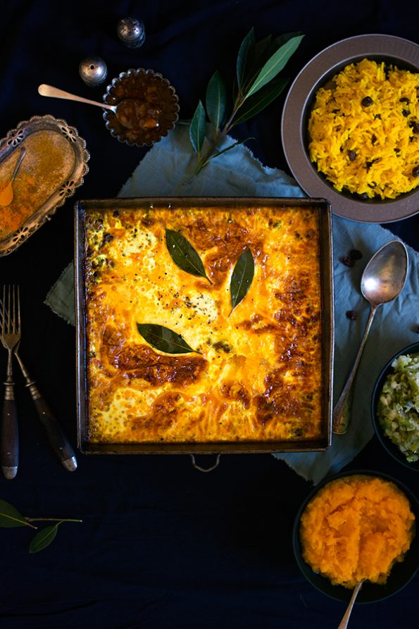

Bobotie Recipe

Traditional South African Bobotie
Pronounced ba-boor-tea, this much-loved South African dish is a delicious mixture of curried meat and fruit with a creamy golden topping, not dissimilar to moussaka
Ingredients
- 2 slices white bread
- 2 onions, chopped
- 25g butter
- garlic cloves, crushed
- packet lean minced beef
- 2 tbsp Madras curry paste
- 1 tsp dried mixed herbs
- 3 cloves
- 5 allspice berries
- 2 tbsp peach or mango chutney
- 3 tbsp sultana
- 6 bay leaves
For the topping
- 300ml full-cream milk
- 2 large eggs
Method
Step 1
Heat oven to 180C/fan 160C/gas 4. Pour cold water over the bread and set aside to soak.Step 2
Meanwhile, fry the onions in the butter, stirring regularly for 10 mins until they are soft and starting to colour. Add the garlic and beef and stir well, crushing the mince into fine grains until it changes colour. Stir in the curry paste, herbs, spices, chutney, sultanas and 2 of the bay leaves with 1 tsp salt and plenty of ground black pepper.Step 3
Cover and simmer for 10 mins. Squeeze the water from the bread, then beat into the meat mixture until well blended. Tip into an oval ovenproof dish (23 x 33cm and about 5-6cm deep). Press the mixture down well and smooth the top. You can make this and chill 1 day ahead.Final Step
For the topping, beat the milk and eggs with seasoning, then pour over the meat. Top with the remaining bay leaves and bake for 35-40 mins until the topping is set and starting to turn golden.
Return to main page